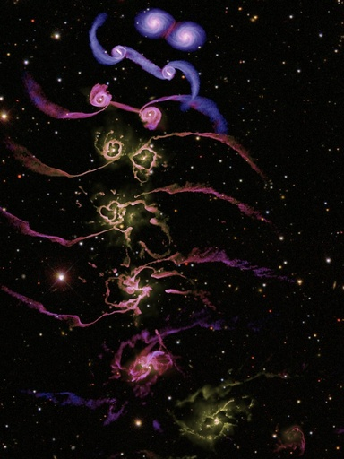

Table of Contents
Physics is Phun!
Project Ideas
Things rolling down hills
Play around with mass, radius, and moment of inertia, what is independent of the others? it seems only the moment of inertia matters, but that is very unintuitive…or is it intuitive?
Also, given an object, what's the fastest way for it to get down the hill? Brachristocrone_Curve, and another explanation using Calculus of Variations, and optimal control theory??!!
Assume objects of the same mass…why again does a dowel roll slower than Is there an intuitive explanation behind moment of inertia?
- Lots of crazy stuff out there. Someone did a nice job

| Seeing Things |
|---|
| vision |
Great Overview Websites
- Excellent tutorials on Physics topics. Physics at UNSW in Australia. Everything from mechanics to cochlear implants to acoustics, to differential equations, etc. All in illustrative movies
- The Physics Classroom is another great site edited and maintained by a high school teacher. Still trying to understand his explanations of color mixing…it's really good and thought provoking.
- Be sure to view the Student Extras sections for great images and sometimes video!
Other random things
 Simulation of galaxies colliding